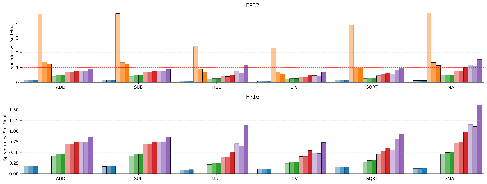
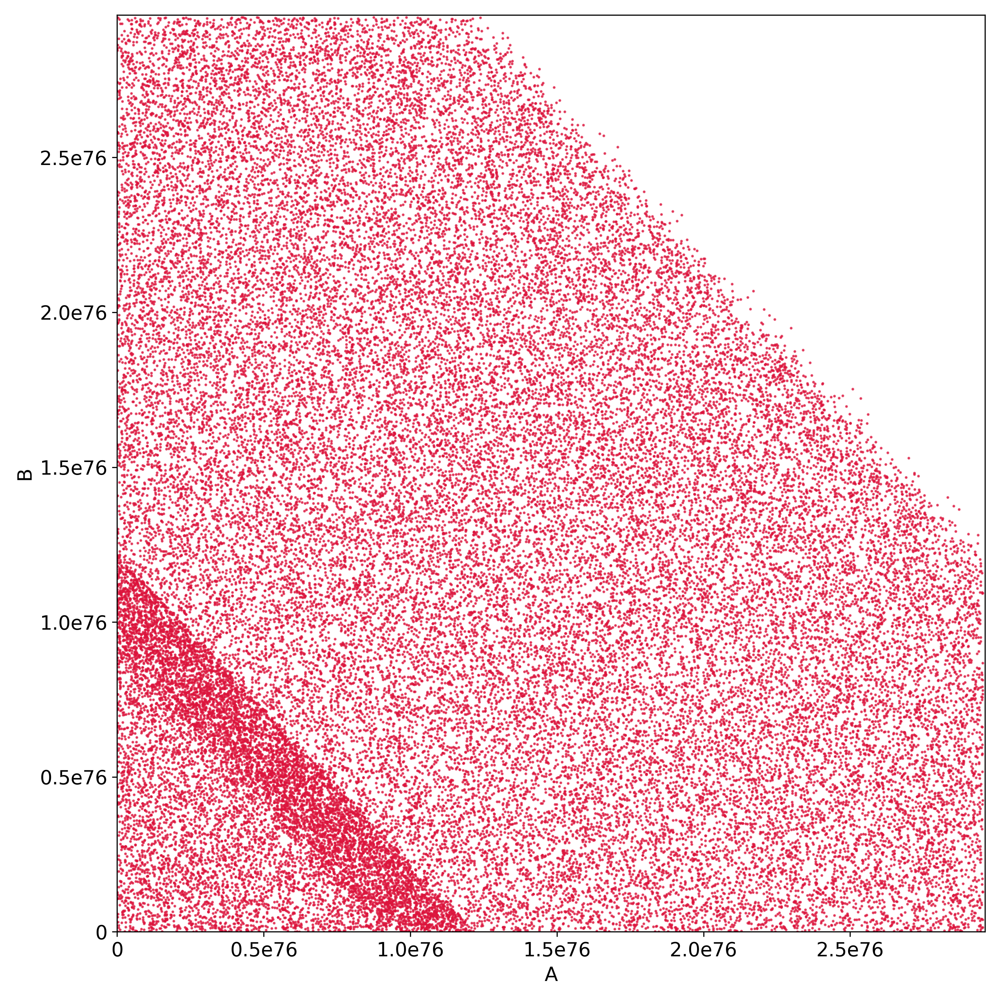

Format containment and correct double-rounding results are mechanized in Lean 4, with LLMs (Claude) used to mechanize prose proofs; supplementary artifact provided.
Abstract
Number libraries, which implement number formats and their arithmetic in software, are used to simulate hardware, making hardware behavior reproducible and thus verifiable and easier to design. However, modern machine learning accelerators are difficult to simulate, as they increasingly use specialized number formats that existing number libraries do not support. It is costly to extend these libraries using traditional methods: each combination of operation, format, and rounding mode typically requires a bespoke implementation. An easier way is to double round—compute at higher precision, then re-round—so that one high-precision kernel serves many formats, but double rounding is only known to be correct in select cases. We give a precise, efficiently checkable characterization of when double rounding is correct across many formats and rounding modes. Our result rests on a novel abstract number format that unifies fixed- and floating-point representations, reducing the correctness of double rounding to format containment: whether every value of one format is representable in another. We mechanized these results in Lean 4. In addition, we introduce a format inference algorithm that, given a sequence of operations, bounds each expression by a number format guaranteed to contain its result. We apply these insights in two ways. First, we present MPFX, a correctly-rounded, multi-precision number library that exploits correct double rounding to efficiently simulate many number formats. MPFX's correctly-rounded operations are up to 11x (mean: 6.05x) faster than MPFR's, and competitive with SoftFloat's—between 0.46x and 1.63x as fast (mean: 0.94x)—at the same precision. Second, in a case study, we implement a software simulation of a hardware specification using both SoftFloat and MPFX's primitives; the MPFX version is up to 13.5x faster.
Problem
Number libraries must simulate many specialized ML number formats, and writing a bespoke implementation for each combination of operation, format and rounding mode is costly. Double rounding (compute at higher precision, then re-round) avoids this, but it was only known to be correct in select cases.
Approach
The authors define an abstract number format A(p, exp, b) that unifies fixed- and floating-point formats. This reduces correct double rounding to format containment, which is decided by efficient rules on the format parameters. They add a format inference algorithm that bounds intermediate expressions by a format. The results are mechanized in Lean 4: definitions and theorem statements were written by hand, and LLMs mechanized the prose proofs.
Figure 4. Representable values on the real line for a floating-point format with an initial quantum q=2^{-2} and a maximum precision of p=2 .
Results
MPFX, a C++ correctly-rounded multi-precision library built on correct double rounding, is up to 11x faster than MPFR (mean 6.05x) and comparable to SoftFloat (mean 0.94x). In an MX dot-product case study, the MPFX-based simulation is up to 13.5x faster than the SoftFloat-based one.

Figure 10. Relative speedup over SoftFloat for each operation, datatype, and rounding mode. The top and bottom panels show single-precision (FP32) and half-precision (FP16), with the six operations along the x -axis. Within each operation, the bars are, left to right, MPFR, FloppyFloat (FP32 only), CPFloat, MPFX/HW, and MPFX/EFT, each as three bars for the RNE, RTP, and RTZ modes; the dashed line

Figure 11. Mismatches between the specification in Figure 2 (left) and a naive implementation that runs the entire dot product uniformly in FP32.